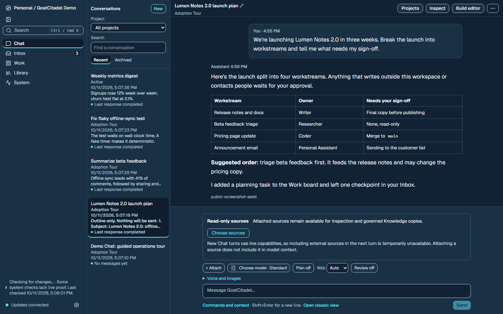
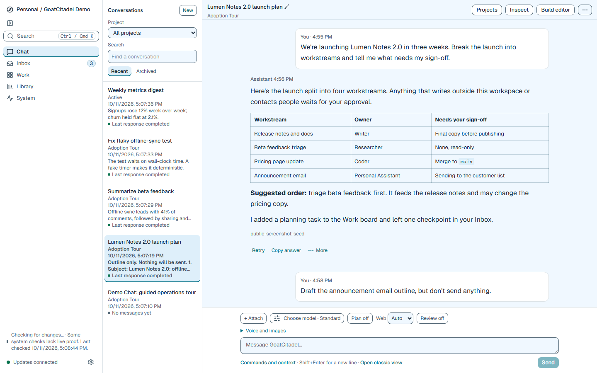
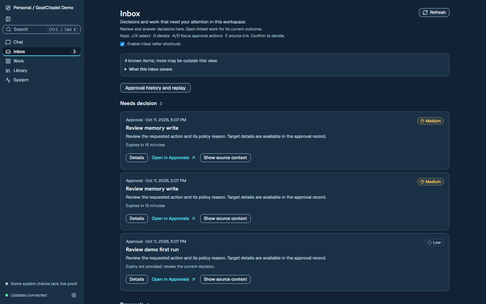
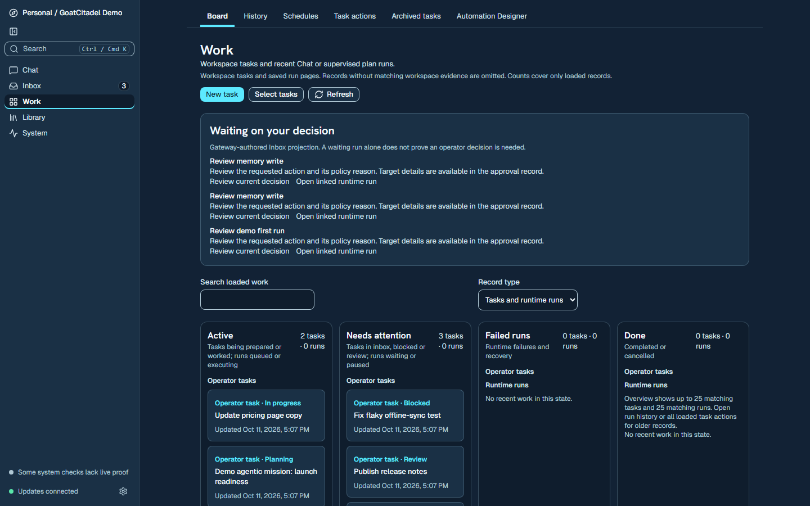
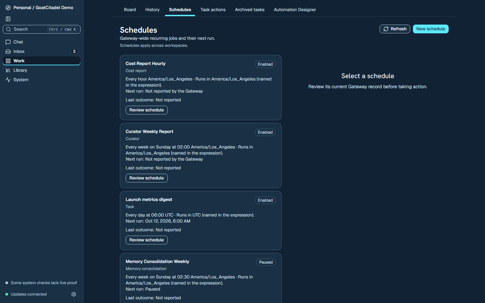
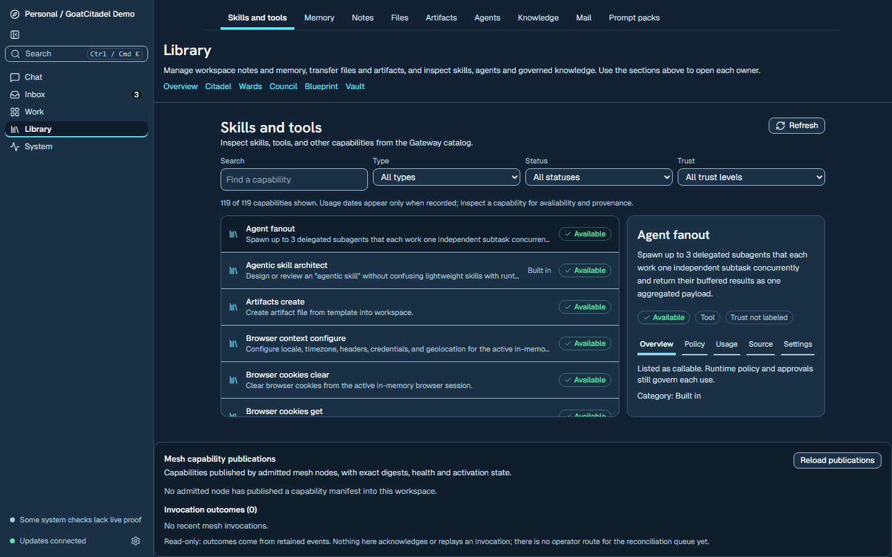
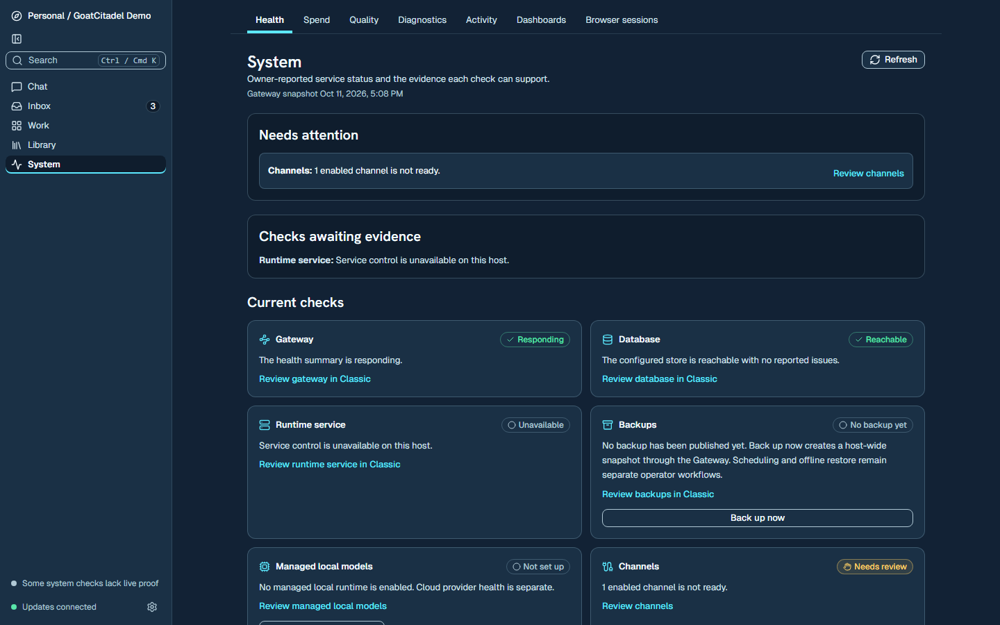
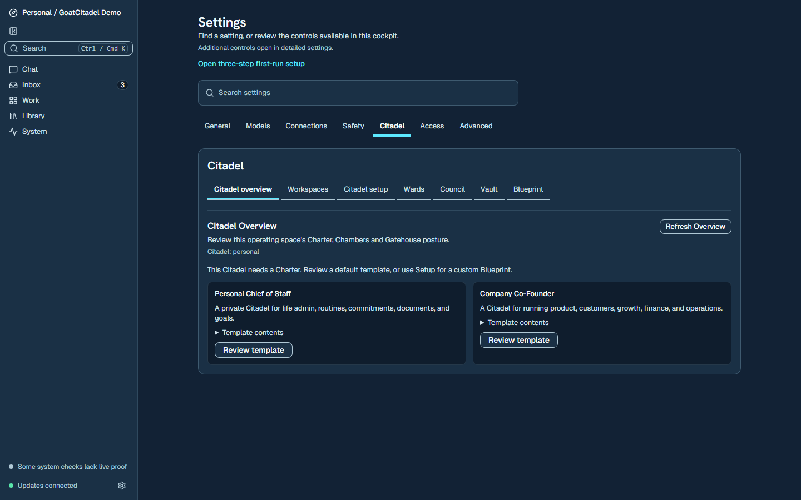
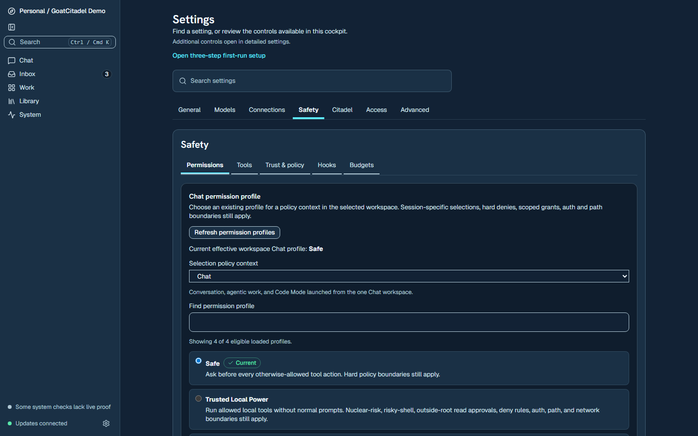
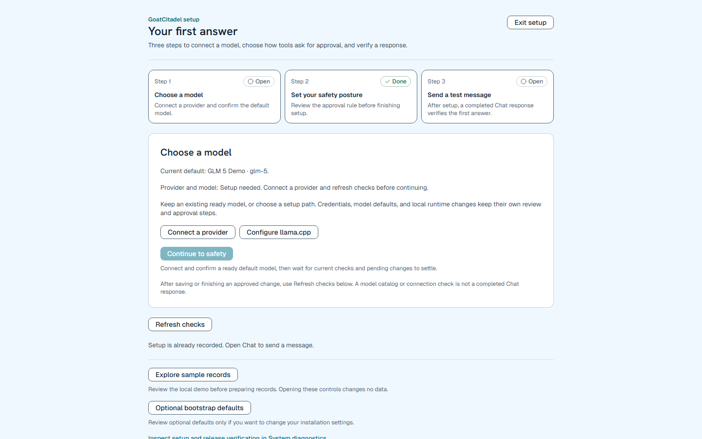

GoatCitadel Mission Control Next Screenshots
Cockpit layout, regenerated from a sanitized demo runtime built from shipped defaults. All records are fictional demo content. Folder: docs/screenshots/mission-control-next
Chat
One conversation surface for questions, planning, agentic runs, approvals, and governed code work.

Chat · Light theme
The same Chat surface in the light Cockpit theme.

Inbox
Everything waiting on a human decision: approvals, questions, and proposals, with source context.

Work · Board
Tasks and runs across their lifecycle, with history and schedules one tab away.

Work · Schedules
Governed recurring automations with their cadence, state, and run history.

Library · Capabilities
Inspectable skills, tools, MCP servers, and channels with trust and provenance.

System · Health
Gateway, database, provider, and backup health at a glance.

Settings · Citadel
Citadel charter, wards, council, vault, and blueprint posture.

Settings · Safety
Permissions, tool approval mode and grants, trust policy, hooks, and budgets.

First-run setup
Guided setup from a fresh install to a first answer.
